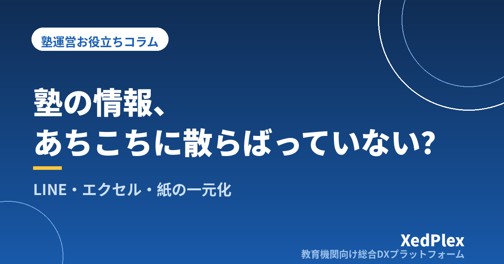

塾の情報がLINE・エクセル・紙に散らばる問題と一元化の進め方｜「どこを見れば正しいか」を決める4ステップ

欠席の連絡はLINEで届き、名簿はエクセル、月謝の入金は通帳と手書きの台帳、指導の記録は講師ごとのノート、季節講習の申込は紙の用紙。開業したころは「とりあえず手元にあるもの」で回せていたのに、生徒が増えるにつれて、ひとつの確認に何か所も見に行くようになっていませんか。
情報が散らばること自体は、塾が成長してきた証でもあります。問題は、同じ情報が複数の場所にあり、どれが正しいのか分からなくなることです。この記事では、個人塾・小規模塾で情報が散らばるときに起きることとその原因を整理したうえで、無理なく一元化を進める4つのステップと、移す順番・続けるためのルールを紹介します。
情報が散らばると起きる3つの症状
「なんとなく不便」を放っておくと、次のような形で塾長の時間と信頼を少しずつ削っていきます。
- 探す時間が増える：「〇〇さんの振替、いつにしたっけ」を確かめるために、LINEの履歴をさかのぼり、カレンダーを見て、メモ帳をめくる。1回は数分でも、1日に何度も起きれば大きな時間になります。
- 情報が食い違う：保護者の電話番号を名簿では更新したのに、連絡網の紙は古いまま。月謝の金額がエクセルと請求書で違う。どちらが正しいか、毎回確かめ直すことになります。
- 塾長しか分からない：どこに何があるかを知っているのが塾長だけなので、講師に任せられず、塾長が休むと回らなくなります（この点は塾長が休めない塾から抜け出す仕組み化の記事でも詳しく扱っています）。
どれも、ツールが悪いのではなく、「この情報はここを見る」という決まりがないことから起きています。
なぜ塾の情報は散らばるのか
散らばる経緯には、多くの塾で共通するパターンがあります。原因が分かると、どこから手をつけるかも見えてきます。
| 原因 | よくある例 |
|---|---|
| 受け取り口が相手任せ | 保護者によって電話・LINE・口頭・連絡帳と連絡手段がばらばらで、受けた場所にそのまま情報が残る |
| 必要になった順にツールを足した | 名簿はエクセル、連絡は個人LINE、申込は紙、と困るたびに別の道具を追加し、つながりがない |
| 書き写しが前提になっている | LINEで受けた欠席を台帳に書き写す、紙の申込を名簿に打ち直す。書き写すたびに漏れと食い違いが生まれる |
特に講師の個人LINEで保護者とやりとりしている場合は、情報が個人の端末に閉じてしまいます。連絡手段そのものの整理は講師の個人LINE頼みは危険？の記事を参考にしてください。
一元化の第一歩は「情報の棚卸し表」
いきなり新しいツールを探す前に、今どの情報がどこにあるかを1枚の表に書き出します。ポイントは、情報の種類ごとに「今ある場所」と「正とする場所」を分けて書くことです。
| 情報の種類 | 今ある場所 | 正とする場所（案） | 更新する人 |
|---|---|---|---|
| 生徒・保護者の基本情報 | エクセル、申込書、連絡網の紙 | 名簿（1つ） | 塾長 |
| 出欠・入退室 | 紙の出席簿、LINE | 出欠の記録（1つ） | 受付した人 |
| 欠席連絡・振替 | LINE、電話メモ、カレンダー | 振替台帳 | 受付した人 |
| 月謝・請求・入金 | エクセル、通帳、手書き台帳 | 請求・入金の記録 | 塾長 |
| 指導の記録・成績 | 講師ごとのノート、テスト用紙 | 生徒ごとの記録 | 担当講師 |
| 保護者への連絡履歴 | LINE、メール、口頭 | 連絡の記録 | 連絡した人 |
書き出してみると、「今ある場所」が3つ以上ある情報がいくつか見つかるはずです。そこが一元化の優先候補です。なお、棚卸しの過程で個人情報が入ったファイルや紙の置き場所も見えてきます。保管の基本は生徒の個人情報管理の基本の記事も確認してください。法令上の扱いで迷う点は、専門家や個人情報保護委員会の相談窓口に確認するのが確実です。
一元化を進める4つのステップ
棚卸し表ができたら、次の4つのステップで進めます。全部を一度に新しいシステムへ移す必要はありません。
ステップ1：情報ごとに「正本」を1つ決める
正本とは、「迷ったらここを見れば正しい」という唯一の場所です。たとえ当面はエクセルのままでも、名簿の正本はこのファイル、と決めるだけで食い違いは減ります。ほかの場所にある写しは「参考」と割り切り、更新は正本だけで行います。
ステップ2：入口をそろえる
情報が入ってくる経路を絞ります。たとえば欠席連絡なら「連絡はこの方法だけで受け付けます」と保護者に案内し、電話や口頭で受けたものもその日のうちに同じ場所へ記録する、とルールにします。入口がそろうと、記録漏れの大半はなくなります（欠席連絡の窓口づくりは欠席・振替管理のルール作りで詳しく解説しています）。
ステップ3：書き写しをなくす
同じ情報を2回入力している作業を探し、どちらか一方をやめます。紙の申込書を名簿に打ち直しているなら、最初から名簿に入力できる形で受け付ける。名簿と請求表に同じ生徒情報を入力しているなら、名簿から請求が作れる形にまとめる。「入力は1回、見る場所はどこでも」が理想の状態です。
ステップ4：「どこに何を残すか」を1枚にまとめて共有する
最後に、棚卸し表の「正とする場所」と「更新する人」をそのまま運用ルールとして講師と共有します。新しく入った講師にもこの1枚を渡せば、「あの情報どこですか？」と聞かれる回数が減ります。手順書にまとめるなら業務マニュアルの作り方も参考になります。
移す順番と、元に戻らないためのルール
移す順番の目安
一元化は、効果が大きく、毎日発生する情報から始めると手応えを感じやすくなります。
- 名簿（生徒・保護者の基本情報）：ほかのすべての情報の土台。ここが整わないと、出欠も請求もつながりません。
- 出欠・欠席連絡：毎日発生し、保護者とのやりとりも多い情報。入口をそろえる効果がすぐに出ます。
- 請求・入金：間違えると信頼に直結する情報。名簿とつながると、毎月の確認がぐっと楽になります。
- 指導の記録・保護者への報告：講師ごとに散らばりやすい情報。記録の型は生徒記録（日誌）を残す習慣と活かし方を参考にしてください。
1つの情報を移したら、2〜4週間はその運用に慣れる期間をとり、それから次に進むのがおすすめです。システムを入れ替える場合の具体的な段取りは塾管理システムの乗り換え、データ移行と切り替えの手順で整理しています。
元に戻らないための3つのルール
- 古い場所は「閉じる」：移行が終わった紙の台帳やファイルは、更新しないことを明示して保管場所を分けます。残しておくと、つい古いほうに書き込んでしまいます。
- 「その場で正本に」を習慣にする：立ち話で聞いた変更も、メモではなく、その日のうちに正本へ記録します。
- 月に1回、棚卸し表を見直す：新しい「今ある場所」が増えていないかを確認します。5分で終わる作業ですが、散らばりの再発を早めに止められます。
まとめ
LINE・エクセル・紙・アプリに情報が散らばる問題は、ツールを1つ増やすことでは解決しません。情報ごとに正本を1つ決め、入口をそろえ、書き写しをなくし、その決まりを全員で共有する。この順番で進めれば、今のツールのままでも食い違いと探す時間は確実に減らせます。そのうえで、名簿・出欠・請求・保護者連絡をひとつの仕組みにまとめると、書き写しそのものがなくなります。何から手をつけるか迷ったら塾のDX、何から始めればいい？もあわせてご覧ください。まずは今週、棚卸し表の1行目「生徒・保護者の基本情報が今どこにあるか」を書き出すところから始めてみてください。
この記事を書いた運営より
私たちは、個人経営・小規模の学習塾向けに、生徒管理・QRコードでの入退室記録・月次請求・保護者へのLINE/メール通知・AIによる学習支援までをひとつにまとめた教育機関向け総合DXプラットフォーム「XedPlex（ゼドプレックス）」を開発・提供しています。初期費用は0円、料金は生徒1名あたり月額300円（税込）から。生徒50名の塾なら月15,000円（税込）です。全国8つの教室で導入されており、導入塾には紹介ホームページの無料作成も行っています。機能の詳細説明はこちら。
XedPlexの詳細を見る